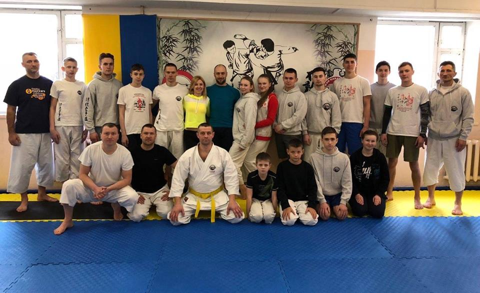

Про нас
Карате - це класичне японське бойове мистецтво, яке поєднує в собі кілька рівноцінних складових: ката - технічні комплекси, що включають весь арсенал ударів, стійок, пересувань і елементи дихальної гімнастики. А також куміте - прикладний розділ. На сьогоднішній день карате є одним з найпопулярніших видів бойових єдиноборств в Україні. І це не дивно, адже з 2016 року карате отримало Олімпійський статус. Рекомендовано для будь-якого рівня підготовленості та вікових категорій.
Якщо ви бажаєте мати гарну фізичну форму, хороший настрій, віднайти нових друзів - тоді вам до нас!
Наші тренери

Кузьменко Анатолій Вікторович - член національної збірної, багаторазовий чемпіон України, Європи,переможець та призер чемпіонатів та кубків Світу; майстер спорту України,І І дан карате

Білоскурський Микола Романович - майстер спорту міжнародног,о классу, багаторазовий чемпіон України, призер чемпіонатів Європи та Світу, нині являється найкращим тренером в Україні, III дан карате

Ністор Роман Сергійович - кандидат в майстри спорту України, переможець та призер чемпіонатів України, та міжнародних турнірів
Розклад занять
| Урок | 5 "А" | 5 "Б" | 5 "В" | 1 | Українська мова | Українська література | Історія України |
| 2 | Математика | Інформатика | Англійська мова |
| 3 | Історія України | Математика | Інформатика |